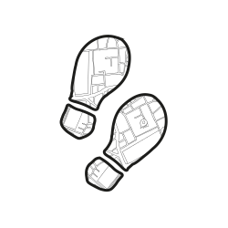

Din vandrende rejse starter her
Uanset om du er på en rejse for, at finde tilbage til dig selv, få mere ro og luft i din hverdag, eller rejsens mål ligger i et vægttab - så byder vi DIG velkommen! Vi er et fællesskab af ambassadører for gakkede gangarter, og vores mission er, at få dig tættere på dine daglige 10.000 skridt.
Sundhedsstyrelsen anbefaler at vi tager 10.000 skridt på daglig basis. Dét i sig selv kan virke overvældende og uoverskueligt, og har man ikke et aktivt job, kræver det ekstra fantasi, at komme i mål hverdag. Vi har taget første skridt for dig, og fundet hyggelige, smukke ruter i både natur- og byområder. Alt du skal gøre, er at tage det næste skridt, og komme ud af døren.
Rigtig god tur!
(vi glæder os til at se dig derude!)
Vi har taget første skridt
Alle vores ruter har angivet længde i antal skridt. Du kan altså let se dig igennem hvilken rute, der passer netop din målsætning. Lige nu har vi primært ruter i og omkring København, men vores udvalg af ruter udvides hele tiden. Har du en favorit rute, du vil dele med os, så kontakt os endelig på mail.
Må vi gå med dig?
10.000 Skridt er ikke blot en ruteoversigt. Vi er et fællesskab for gang-glade vandrefolk og en inspirations- og vidensdelingsplatform. Følg os på Instagram @10kSkridt og brug gerne #10000skridt, når du har fundet nye, lækre ruter. Vi vil elske, at gå en tur med dig!
